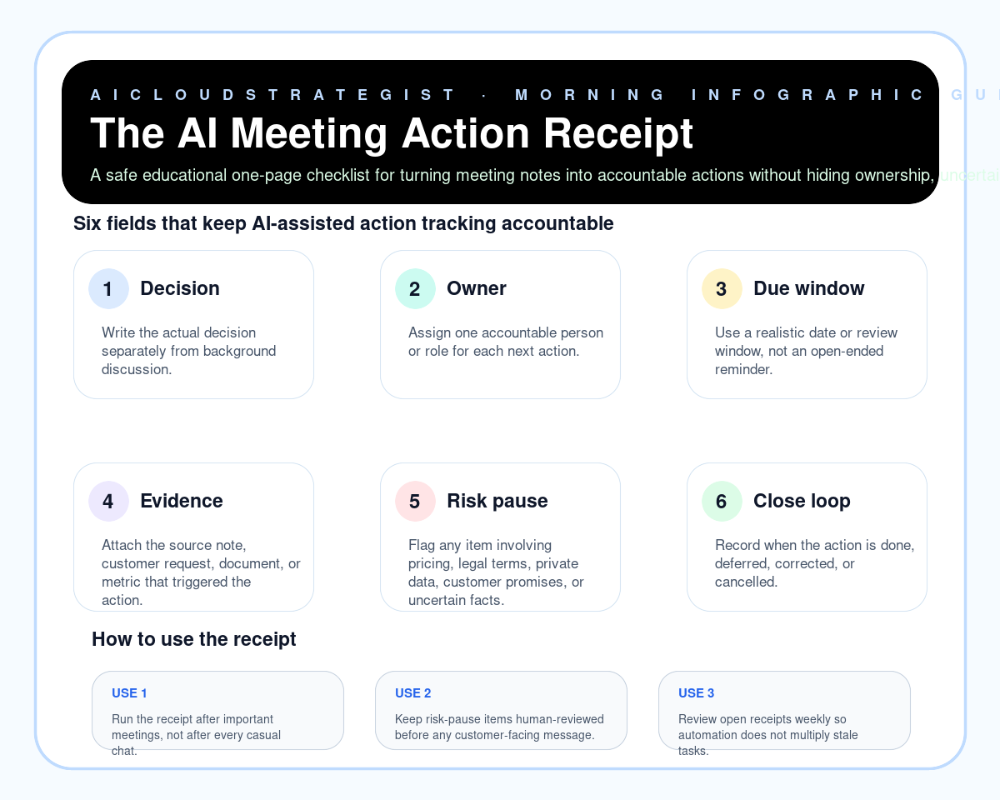

Morning publication · AI meeting operations
The AI Meeting Action Receipt
A safe educational one-page checklist for turning meeting notes into accountable actions without hiding ownership, uncertainty, or customer-impact risk.

Six receipt fields
- Decision: Write the actual decision separately from background discussion.
- Owner: Assign one accountable person or role for each next action.
- Due window: Use a realistic date or review window, not an open-ended reminder.
- Evidence: Attach the source note, customer request, document, or metric that triggered the action.
- Risk pause: Flag any item involving pricing, legal terms, private data, customer promises, or uncertain facts.
- Close loop: Record when the action is done, deferred, corrected, or cancelled.
How to use it
- Run the receipt after important meetings, not after every casual chat.
- Keep risk-pause items human-reviewed before any customer-facing message.
- Review open receipts weekly so automation does not multiply stale tasks.
Truth boundary
Educational operations checklist only — not legal, compliance, medical, financial, security, certification, revenue, savings, ranking, customer-result, or guaranteed-performance advice.